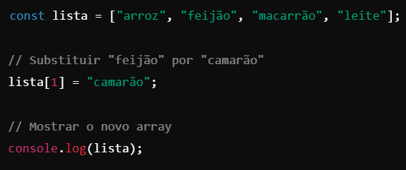
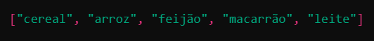
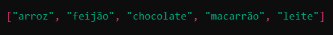
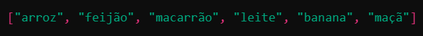
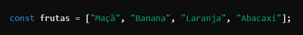
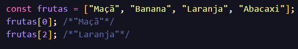

Existe de varias formas de manipular um arrays entre elas falaremos de;
Código:

Adicionar ao final do arrays com .push( )
A função .push( ) insere novos itens no final do arrays.
Exemplo:
Resultado:
Adicionar ao início do array com .unshift()
A função .unshift() insere novos itens no início do array.
Exemplo:
Resultado:

Adicionar em uma posição específica com .splice().
A função .splice() permite inserir itens em qualquer posição determinado pelo desenvolvedor do array.
Exemplo:
Resultado:

Adicionar múltiplos itens de uma vez
A função .push() permite não somente inserir novos itens no final do array, mas também permite adicionar vários itens usando .push().
Exemplo:
Resultado:

💡 Dica: Para verificar o tamanho do array após a inserção, use array.length. Teste os métodos no console do navegador ou em seu código para entender melhor!
Exemplo Prático:
Se tivermos o seguinte array:

const frutas = ["Maçã", "Banana", "Laranja", "Abacaxi"];
Para visualizar o primeiro item, usamos frutas[0], que retorna "Maçã".
Para visualizar o terceiro item, usamos frutas[2], que retorna "Laranja".

Codigo
Exemplo Simples:
Explicação
Array.isArray(): É o método mais confiável para verificar se uma variável é um array.
Funciona mesmo se você estiver lidando com diferentes contextos (como objetos criados em outro escopo).
Por que não usar typeof?: O operador typeof retorna "object" para array, o que pode ser confuso e não garante a identificação correta.